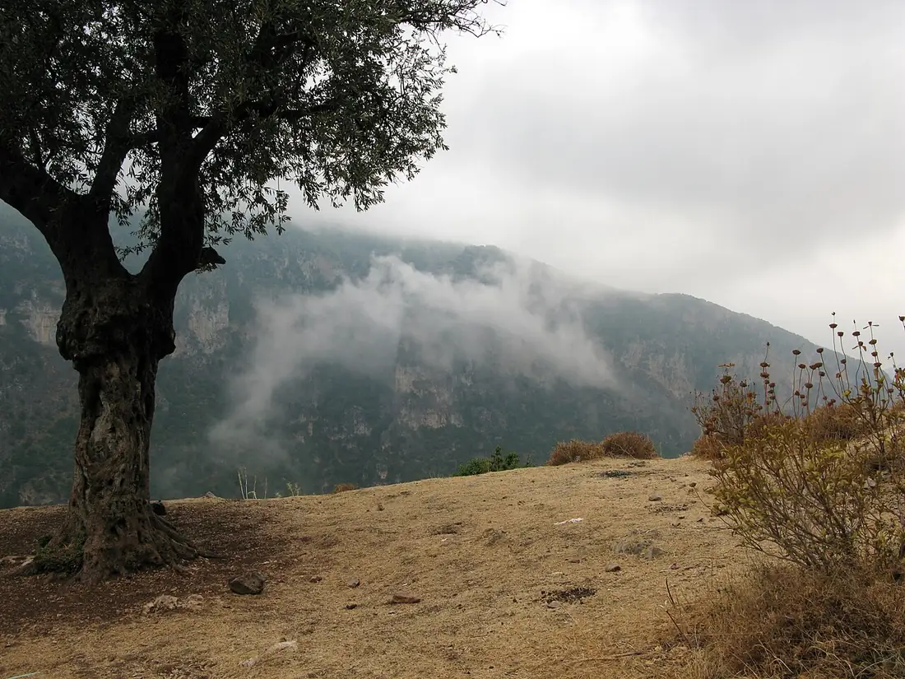

Qozhaya, Saint Anthony's House
The Monastery of Qozhaya (Saint Anthony), beneath Ehden in the Qadisha Valley, belongs to the Lebanese Maronite Order - Saint Charbel's order. It served as the order's mother house from 1708 to 1723, and a bilingual Syriac and Garshuni Psalter was printed here in 1610.
On the Holy Valley's southern branch, beneath Ehden, a great stone monastery stands against the cliff where hermits have lived since the first centuries of monasticism. Qozhaya once served as the mother house of the order that formed Saint Charbel, and its press produced the bilingual Psalter of 1610.
The Treasure of Life
The monastery takes its name from the valley it stands in, and scholars now commonly read Qozhaya as Syriac for "treasure of life." Its dedication is older than any printing press: Saint Anthony the Great, the Egyptian hermit the Church calls the father of monasticism. The Qozhaya branch joins the Qannoubine branch to the west, and together they make up the Qadisha - the Holy Valley.
As Old as the Valley's Monasticism
Qozhaya is counted among the oldest monasteries of the Qadisha. Historians suppose that hermits first built and occupied it at the beginning of the fourth century, when this coast was still Roman Phoenicia, and vestiges survive from the seventh. It was looted, burned, and razed more than once, and for a period - probably in the twelfth century - it served as a seat of the Maronite Patriarch. Destroyed in the sixteenth century, it was rebuilt, and today it is one of the largest working monasteries in Lebanon: church, cells for monks and nuns, library, museum, and a guest house.
The 1610 Psalter and Printing Press
Monastery tradition dates Qozhaya's press to 1584. What the documents show is this. Sarkis al-Rizzi - Sergius Risius in the Latin sources - an alumnus of the Maronite College of Rome and later Archbishop of Damascus, carried a printing press back from Rome. With the master printer Pasquale Eli, brought over from southern Italy, and the deacon Yuseph ibn Amima of Karm Sadde, he set it to work at Qozhaya. On November 10, 1610, the book's own colophon records, they finished the Qozhaya Psalter: a small folio of 260 pages, the psalms set in two columns - Syriac on the right, and on the left Arabic written in Syriac letters, the script called Garshuni.
It was the first book printed in the eastern Ottoman Empire, and no second book is recorded from the Qozhaya press; nearly a century passed before printing returned to the region. An earlier Psalter dated 1585 was once catalogued in Florence, but no copy of it survives in any library, and a papal visitor to the Maronites in 1596 reported no printing press among them - so the 1610 Psalter stands as the documented first. Copies are kept today in Nuremberg and Wolfenbüttel, in Paris at the National Library and Sainte-Geneviève, and in Beirut and Kaslik.
Mother House of the Lebanese Maronite Order
In 1708 Qozhaya was handed to the young Lebanese Maronite Order, founded in 1695 to revive the monastic heritage - the order of Kfifan, Annaya, and Jrabta, the order that formed Nimatullah, Rafqa, and Charbel. At its height in the early nineteenth century more than three hundred monks belonged to Qozhaya, and with its lands in the valley it remains one of the order's strongest houses, helping to carry its poorer monasteries.

What to See at Qozhaya
- The Grotto of Saint Anthony the Great - the monastery's great cave, tied to its patron.
- The Church - the heart of the working monastery.
- The Museum - treasures of the monastery's long history.
- The Library - the monks' collection, heir to the age of the press.
- The Hermitage of Mar Boula - the attached hermitage above the monastery.
- The guest house - for those who want to stay in the valley rather than pass through.
Visiting Qozhaya
Qozhaya is the easy monastery of the Holy Valley: a road descends right to it from the Ehden side, about two hours from Beirut through the mountains of North Lebanon. It is a working monastery, so come with modest dress and a quiet voice. The natural pairing is Qannoubine, on the opposite branch - Qozhaya by car in the morning, the patriarchs' fortress on foot in the afternoon. Our Qadisha Valley guide covers the rim towns, the seasons, and the hermitages between the two.
Pair It With the Saint's Own Places
The order that keeps Qozhaya also keeps Annaya, where Saint Charbel's tomb draws pilgrims from every continent. His story began above this valley, at Bekaa Kafra, and the Saint Charbel Trail links his places across Mount Lebanon on foot. For the whole map, see our guide to Saint Charbel places in Lebanon.
Frequently Asked Questions
What is Qozhaya Monastery?
A Maronite monastery dedicated to Saint Anthony the Great in the Qadisha Valley of North Lebanon - one of the oldest monasteries of the valley, and today a monastery of the Lebanese Maronite Order, the order of Saint Charbel.
What was the first book printed at Qozhaya?
The Qozhaya Psalter, completed on November 10, 1610 - the Psalms in Syriac and Garshuni, printed by Sarkis al-Rizzi with the master printer Pasquale Eli and the deacon Yuseph ibn Amima. It was the first book printed in the eastern Ottoman Empire. Monastery tradition dates the press itself to 1584, but no earlier printed book survives.
What does the name Qozhaya mean?
Scholars now commonly read it as Syriac for "treasure of life." The monastery takes its name from the valley it stands in.
What is the Lebanese Maronite Order?
The monastic order founded in 1695 to revive Maronite monastic life - the order of Saint Charbel, St Nimatullah, and St Rafqa. Qozhaya was handed to the order in 1708 and served as its mother house from 1708 to 1723.
Can you visit Qozhaya today?
Yes. Unlike Qannoubine, which is reached on foot, Qozhaya is reachable by car. It welcomes visitors with modest dress and quiet, and keeps a guest house.
How do you get to Qozhaya?
By road from the Ehden side of the valley, about two hours from Beirut. The monastery stands in the Zgharta District of North Lebanon, inside the Qadisha Valley.
Sources
- Holy Spirit University of Kaslik (USEK): The Maronite Qozhaya Psalter, 1610 - the first book printed in the eastern Ottoman Empire
- USEK Library, Hidden Treasures: the 1610 colophon, the doubtful 1585 edition, and the papal visitor's 1596 report
- Gutenberg and the history of printing in Lebanon (typographie.org): Le Psautier de Qozhaya - al-Rizzi, Pasquale Eli, and Yuseph ibn Amima
- Wikipedia: Monastery of Qozhaya - origins, the 1708 handover to the Lebanese Maronite Order, and what to see
- Kobayat: Monastery of Saint Anthony the Great - mother house from 1708 to 1723